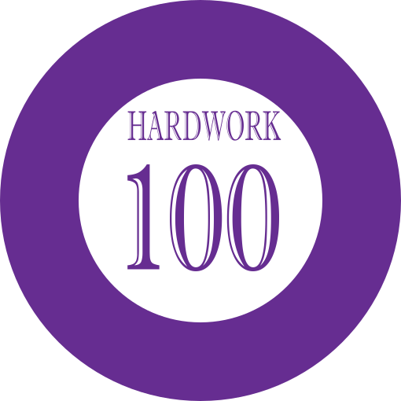
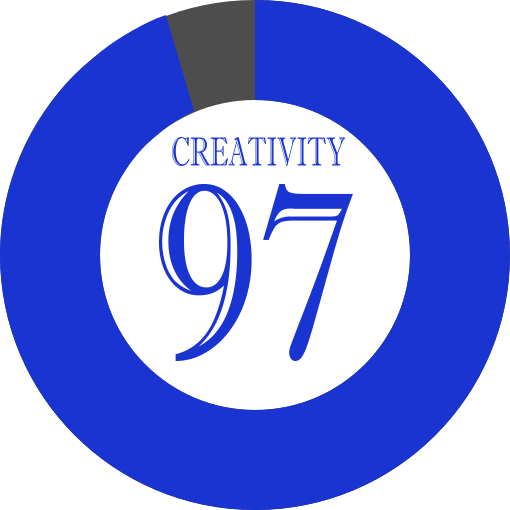
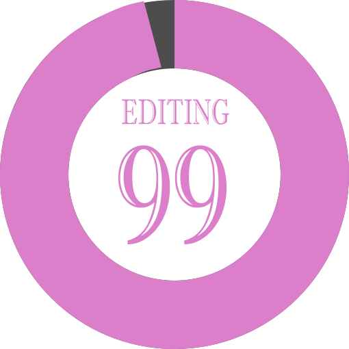

Skills Summary
These are some of my basic skills that I have during work period.
User Design
I always like to create my own design, but if the customer wants an unique design, I will do what a customer wants.
Hardwork
Being a front-web developer, we must need 100% hardwork in order to complete the task(s).
Creativity
If you are creative on what you are doing, you might impress others and they will share your unique creativity to one who will benefit it.
Editing
Editing is more challenging because you need to analyze your project, and if there's something wrong, you can simply recall and edit your work.
Where To Find Me?
You can reach me on these following social media accounts. Please sure that you will respect my privacy, and if you have any questions, comments, or suggestions about me, just leave a message.
Work Experience
These jobs are my source for extra income. Every vacation, I always work to gain more income. These are my following jobs...
Service Master
2018 - current
We do demolition of properties for restoration and cleaning of the property after demolition like sweeping, throwing waste, vacuuming, and moving of properties for the client.
Warehouse Associate (on-call)
2017
I properly check and receive the goods which transported from companies/shops, and it is my responsibility to sort out each delivery so that order will be delivered properly to the owner.
Education
These are the following institutions where I studying/studied.
Diploma Front-End Web Development
January 2019 - current
www.nait.ca Digital Media and IT Northern Alberta Institute of TechnologyGetting a diploma for Front-End Web Development.
Ascension - upgrading subjects
February 2016 - June 2017
www.ecsd.net/schools/1726/ Ascension High School Cardinal Collins High School Academic CentreUpgraded some subjects in order to meet the specific requirements in post-secondary.
Bachelor of Science in Computer Science
June 2013 - October 2015
www.lcup.edu.ph College of Information Technology and Engineering La Consolacion University PhilippinesMy bachelor degree when I was in college. Unfortunately, I didn't finish my studies because of migration from there to here.